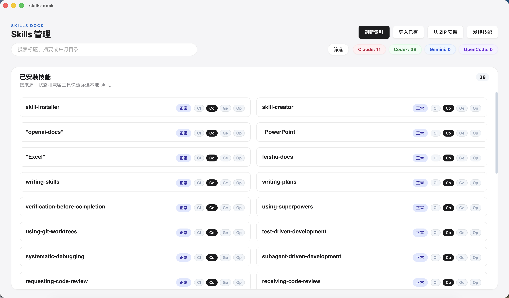
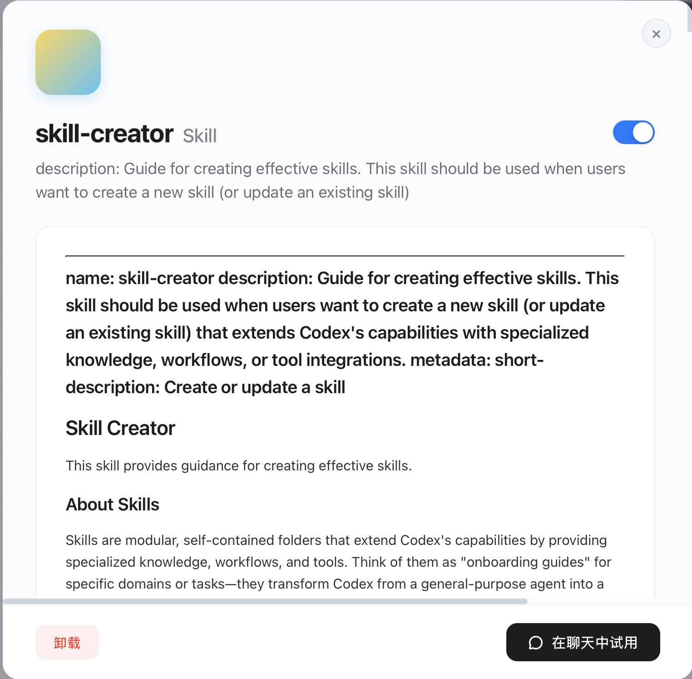

专为需要驾驭多个底层 AI 模型引擎的高阶开发者与提示词工程师设计，实现前所未有的全局视野。
彻底告别散落在不同工具中的零散文件夹。无论你的技能存放在 ~/.claude 还是 ~/.gemini，Skills-Dock 都能跨平台扫描，为你建立统一的中央控制台。
直观对比和查看同一个 Skill 在不同 AI 工具下的安装和校验状态。通过智能合并列表，一目了然地掌握哪些指令在哪些模型中已就绪、哪些存在差异。
化繁为简。我们将底层的复杂目录和配置转化为直观的可视化卡片，让你能以最高效的方式配置、浏览和运行你的专属 AI 技能矩阵。
在技能详情页，你可以一眼看穿该指令在各个引擎中的真实安装位置与 Hash 校验结果。配合内置极速的 Markdown 引擎，长篇系统指令也能以最完美的排版展示，拒绝枯燥的控制台体验。
